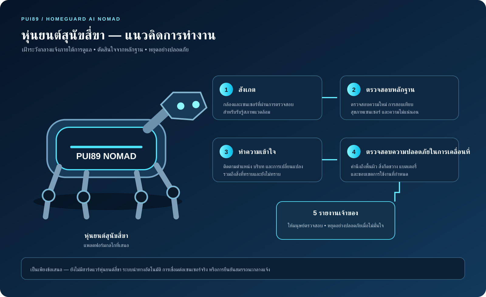

แนวคิดหุ่นยนต์ภายในอาคาร
แนวคิดหุ่นยนต์ภายในอาคารHOMEGUARD AI HOME
ขนาดกะทัดรัด เคลื่อนที่เงียบ ออกแบบสำหรับห้องและทางเดินภายในอาคาร และการเคลื่อนที่อย่างระมัดระวังรอบคนและสัตว์เลี้ยง
ผลิตภัณฑ์หุ่นยนต์สำหรับสภาพแวดล้อมกลางแจ้งในตระกูล HOMEGUARD AI ออกแบบสำหรับการเดินทางและการตั้งแคมป์ภายใต้การดูแลของเจ้าของ โดยมี HOME เป็นหุ่นยนต์อีกแบบหนึ่งสำหรับใช้งานภายในอาคาร โดยใช้ฐานล้อ 4 ล้อ น้ำหนักรวมเป้าหมาย 8 กิโลกรัม และสูงสุด 10 กิโลกรัม ทั้งสองใช้แพลตฟอร์มปัญญาประดิษฐ์ที่ขับเคลื่อนด้วยหลักฐานร่วมกัน

HOMEGUARD AI วางแผนพัฒนาเป็นหุ่นยนต์เคลื่อนที่ 2 รูปแบบที่แยกจากกัน เพราะพื้นที่ภายในอาคารและสภาพแวดล้อมกลางแจ้งมีข้อกำหนดด้านการเคลื่อนที่ เซนเซอร์ การป้องกัน และความปลอดภัยแตกต่างกัน ซอฟต์แวร์ปัญญาประดิษฐ์ใช้ร่วมกัน แต่ตัวหุ่นยนต์ไม่ใช่แบบเดียวกัน
แนวคิดหุ่นยนต์ภายในอาคารขนาดกะทัดรัด เคลื่อนที่เงียบ ออกแบบสำหรับห้องและทางเดินภายในอาคาร และการเคลื่อนที่อย่างระมัดระวังรอบคนและสัตว์เลี้ยง
 แนวคิดหุ่นยนต์กลางแจ้ง
แนวคิดหุ่นยนต์กลางแจ้งหุ่นยนต์สุนัข AI แบบสี่ขาแยกต่างหาก สำหรับการเดินทางกลางแจ้งและการตั้งแคมป์ภายใต้การดูแลของเจ้าของ
หุ่นยนต์ผู้ช่วยสำหรับบ้านและอาคารโดยเฉพาะ เน้นขนาดกะทัดรัด การเคลื่อนที่เงียบ การนำทางอย่างระมัดระวังรอบคน เฟอร์นิเจอร์ และสัตว์เลี้ยง การทำแผนที่ภายในอาคาร การใช้เซนเซอร์โดยคำนึงถึงความเป็นส่วนตัว และการกลับแท่นชาร์จ
หุ่นยนต์กลางแจ้งแบบพกพาทรงกระเป๋าเดินทาง แยกจาก HOME สำหรับการเดินทางและตั้งแคมป์ภายใต้การดูแลของเจ้าของ เน้นตัวถังเพรียว ขาแบบข้อต่อ 4 ขา ด้ามจับยืดหดได้ แบตเตอรี่ถอดได้ และระบบนำทางภายในเครื่อง
หุ่นยนต์ทั้งสองแบบยังเป็นแนวคิด ไม่ใช่ผลิตภัณฑ์ที่สร้างและตรวจสอบสมรรถนะแล้ว ใช้ PUI89 AI Core การตรวจสอบหลักฐาน การประเมินความไม่แน่นอนและความเสี่ยง การตัดสินใจอย่างปลอดภัย และรายงานถึงเจ้าของร่วมกัน แต่การออกแบบกลไก เซนเซอร์ ระบบนำทาง และขอบเขตสภาพแวดล้อมต้องแยกตามผลิตภัณฑ์
ข้อกำหนดด้านล่างใช้กับ NOMAD เท่านั้น ไม่ใช่หุ่นยนต์ HOME สำหรับภายในอาคาร
ภาพและรูปแบบตัวหุ่นยนต์เป็นแนวคิดที่เสนอ ยังไม่ใช่หุ่นยนต์ที่สร้างเสร็จแล้ว การเลือกเซนเซอร์ สมรรถนะด้านไฟ ความปลอดภัยของแบตเตอรี่ การทนสภาพอากาศ การนำทาง และการป้องกันพื้นที่อันตรายต้องกำหนดข้อกำหนดทางวิศวกรรมและผ่านการทดสอบแยกต่างหาก
ขั้นตอนที่เสนอมีความเรียบง่าย: สังเกตสภาพแวดล้อม ตรวจสอบว่าข้อมูลน่าเชื่อถือหรือไม่ ทำความเข้าใจว่าเหตุการณ์เกิดที่ใดและเมื่อใด เลือกสถานะการเคลื่อนที่ที่ปลอดภัย แล้วรายงานให้เจ้าของทราบ เจ้าของเป็นผู้ตรวจสอบการแจ้งเตือนและตัดสินใจดำเนินการ

หุ่นยนต์จะกลับเมื่อระบุตำแหน่งได้ เส้นทางปลอดภัย และแบตเตอรี่เพียงพอเท่านั้น หากไม่เข้าเงื่อนไข ควรหยุดอย่างปลอดภัยและแจ้งเจ้าของเมื่อสามารถติดต่อได้
เป้าหมายทางวิศวกรรมเบื้องต้นสำหรับหุ่นยนต์ขนาดเท่ากระเป๋าเดินทางที่คนหนึ่งคนสามารถยกและขนย้ายได้ ตัวเลขทั้งหมดเป็นข้อเสนอ ยังไม่ใช่ค่าที่วัดจากต้นแบบจริง
HOME และ NOMAD เป็นหุ่นยนต์คนละรูปแบบ HOME ออกแบบสำหรับภายในอาคาร ส่วน NOMAD ออกแบบสำหรับการใช้งานกลางแจ้งภายใต้การดูแลของเจ้าของ
ตรวจตราภายในอาคารภายใต้การดูแล รับรู้ห้องและทางเดิน เคลื่อนที่อย่างระมัดระวังรอบคนและสัตว์เลี้ยง ใช้เซนเซอร์โดยคำนึงถึงความเป็นส่วนตัว และกลับแท่นชาร์จเมื่อเส้นทางและแบตเตอรี่เอื้ออำนวย
ขนย้ายในรูปแบบกระเป๋าเดินทาง และเปลี่ยนเป็นโหมดหุ่นยนต์กลางแจ้งภายใต้การดูแลในพื้นที่ที่กำหนด ใช้ GPS เมื่อมีสัญญาณร่วมกับระบบนำทางภายในเครื่อง ไม่ออกสำรวจพื้นที่ไม่รู้จักโดยลำพัง
เฝ้าสังเกตในเวลากลางคืนด้วยเสียงเบา ลดแสงและเสียงที่ไม่จำเป็น พร้อมรายงานการเคลื่อนไหว ควัน การเปลี่ยนแปลงของสภาพแวดล้อม หรือสัตว์ป่าที่อาจอยู่ใกล้ เพื่อให้มนุษย์ตรวจสอบ
ขนาด เซนเซอร์ ระบบนำทาง การทนสภาพอากาศ ระบบป้องกันแบตเตอรี่ และคุณสมบัติด้านความปลอดภัยทั้งหมดเป็นแนวคิดในอนาคต ยังไม่มีการสร้าง ประกอบ ทดสอบ รับรอง หรือยืนยันสมรรถนะของหุ่นยนต์จริง
แนวคิดหุ่นยนต์ NOMAD ตั้งใจต่อยอดจากแพลตฟอร์มซอฟต์แวร์ที่ใช้หลักฐานสำหรับติดตามสภาพอาคาร โดยซอฟต์แวร์สาธิตในปัจจุบันเป็นระบบกำหนดผลแบบจำลองเท่านั้น ยังไม่มีการเชื่อมต่อเซนเซอร์จริงหรือควบคุมมอเตอร์ของหุ่นยนต์
HOMEGUARD วางแนวทางเป็นระบบติดตามและสนับสนุนการตัดสินใจแบบหลายระดับ โดยเชื่อมโยงข้อมูลกับอาคาร ชั้น ห้อง และอุปกรณ์หรือส่วนประกอบ ไม่ตีความการแจ้งเตือนจากเซนเซอร์แต่ละตัวแยกจากบริบท
ติดตามแรงสั่นสะเทือน การเคลื่อนตัว ความเครียดของวัสดุ การเปลี่ยนแปลงของรอยร้าว และการตอบสนองระหว่างชั้น โดยเปรียบเทียบกับค่าฐานที่บันทึกไว้ การเปลี่ยนแปลงสำคัญต้องให้วิศวกรผู้เชี่ยวชาญประเมิน
พิจารณาข้อมูลกระแสไฟฟ้า แรงดัน อุณหภูมิ และสถานะอุปกรณ์ป้องกันที่เหมาะสม ภาพความร้อนเพียงอย่างเดียวไม่สามารถยืนยันความผิดปกติหรือไฟฟ้ารั่วได้
ช่วยแสดงสถานะของระบบแจ้งเหตุที่ได้รับการรับรองและข้อมูลที่เกี่ยวข้อง HOMEGUARD ต้องไม่ทดแทน ทำให้ล่าช้า หรือปิดการทำงานของอุปกรณ์แจ้งเหตุที่ได้รับการรับรอง
เชื่อมโยงข้อมูลเซนเซอร์น้ำรั่ว ความชื้น การควบแน่น และร่องรอยที่มองเห็นได้ ความชื้นในอากาศเพียงอย่างเดียวไม่สามารถยืนยันเชื้อราหรือระบุตำแหน่งท่อน้ำรั่วที่ซ่อนอยู่
ใช้เซนเซอร์เฉพาะทางที่เหมาะสมและได้รับการรับรองเมื่อมีให้ใช้งาน สัญญาณที่เกี่ยวกับกลิ่นต้องผ่านการตรวจสอบแยกต่างหาก และไม่สามารถระบุชนิดสารได้ด้วยตัวเอง
ศึกษาความผิดปกติของเสียงและเสียงรบกวน คุณลักษณะเสียงที่คำนึงถึงความเป็นส่วนตัว แสงและการกะพริบ ความร้อน ความเย็น และแนวโน้มความชื้น โดยใช้เป็นบริบทประกอบ ไม่ใช่ข้อวินิจฉัยเดี่ยว
รายการความสามารถเป็นแผนพัฒนา ไม่ใช่การกล่าวอ้างว่ามีโมเดล AI ที่ฝึกแล้ว 29 โมเดลหรือมีการติดตั้งเซนเซอร์ครบแล้ว บริการแกนกลางต้องรักษาข้อมูลแหล่งที่มา เวลา การสอบเทียบ คุณภาพ ความไม่แน่นอน และตำแหน่งเชิงพื้นที่
การทำงาน CI รอบเริ่มต้นสำเร็จ โปรดดูสถานะล่าสุดจาก workflow ในคลังโครงการ
หลักฐานจากสถานการณ์ปัจจุบันเป็นข้อมูลสังเคราะห์และการจำลองเท่านั้น
ให้ความสำคัญกับข้อมูลเซนเซอร์ที่ไม่ระบุตัวบุคคล หลีกเลี่ยงวิดีโอภายในบ้าน การจดจำใบหน้า และการบันทึกเสียงพูดที่ไม่จำเป็น ต้องกำหนดสิทธิ์เข้าถึง ระยะเวลาเก็บข้อมูล และความยินยอมก่อนใช้งานจริง
แยกข้อมูลที่วัดได้ ข้อมูลจำลอง สมมติฐาน และข้อสันนิษฐานออกจากกัน ข้อมูลที่ขาดหาย ล้าสมัย มีการคลาดเคลื่อน หรือขัดแย้งกัน ต้องทำให้ระดับความเชื่อมั่นลดลงและส่งต่อให้ตรวจสอบ
ตรวจสอบแหล่งที่มา ใบอนุญาต ความปลอดภัย ความเป็นส่วนตัว ความเหมาะสมของฮาร์ดแวร์ และต้นทุนรวมก่อนนำมาใช้ นโยบายจัดหาปัจจุบันไม่ใช้โมเดล AI ผู้ให้บริการ หรือบริการโฮสต์โมเดลที่มีต้นกำเนิดจากจีน
ซอร์สโค้ด การทดสอบ โครงสร้างข้อมูล และสถานะโครงการ
เปิด HomeguardAI ↗การออกแบบระบบ รายการความสามารถ และลำดับการพัฒนา
สถาปัตยกรรม ↗ขอบเขตความปลอดภัย นโยบายซัพพลายเชน และซอร์สโค้ด
กรอบความปลอดภัย ↗